Java Swing 组件和容器
原文：https://www.studytonight.com/java/java-swing-components-1.php
在上一个主题中，我们讨论了 swing 及其一些组件。现在，我们将介绍 swing 框架的其余组件。让我们从 JoptionPane 开始。
jooption pane
在 Java 中，Swing 工具包包含一个 JOptionPane 类。它在 package javax . swing . JoOptionpane 类下。它用于创建显示消息、确认框或输入对话框的对话框。
申报
公共类 JOptionPane 扩展了 JComponent 实现可访问
JOptionPaneContains 包含 3 个构造器。它们如下:
1.JOptionPane()
2. JOptionPane（对象消息）
3.JOptionPane(对象消息，intmessageType)
示例:
让我们举一个例子来创建 JoptionPane 来显示对话框。见下面的例子。
import javax.swing.*;
public class SOptionPaneDemo
{
JFrameoptionPane_f;
SOptionPaneDemo()
{
optionPane_f=new JFrame();
JOptionPane.showMessageDialog(optionPane_f,"Hello, Welcome to studytonight.com");
}
public static void main(String[] args)
{
new SOptionPaneDemo();
}
}
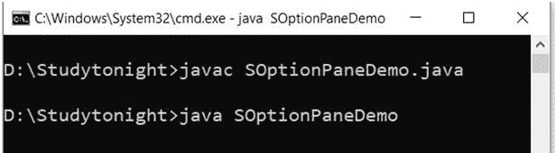
示例:
让我们再举一个例子来理解 JoptionPane 的用法。这里我们创建了一个对话来向用户显示更新消息。
import javax.swing.*;
public class SOptionPaneDemo
{
JFrame optionPane_f;
SOptionPaneDemo()
{
optionPane_f=new JFrame();
JOptionPane.showMessageDialog(optionPane_f,"Successfully Updated.","studytonight",JOptionPane.WARNING_MESSAGE);
}
public static void main(String[] args)
{
new SOptionPaneDemo();
}
}
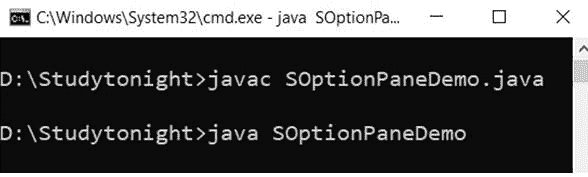 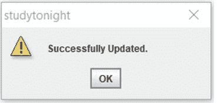
示例:
我们可以使用 JoptionPane 创建用于获取用户输入的提示框。在这个例子中，我们创建了一个对话框来获取用户名。
import javax.swing.*;
public class SOptionPaneDemo
{
JFrame optionPane_f;
SOptionPaneDemo()
{
optionPane_f=new JFrame();
JOptionPane.showInputDialog(optionPane_f,"Enter your Name");
}
public static void main(String[] args)
{
new SOptionPaneDemo();
}
}
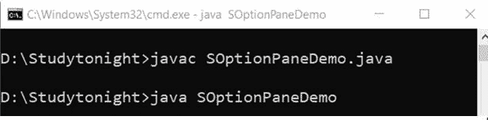 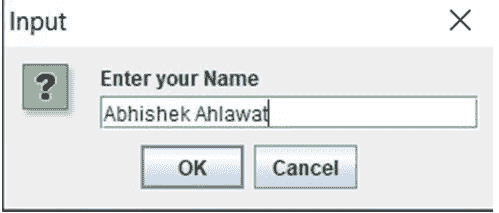
JScrollBar
在 Java 中，Swing 工具包包含一个 JScrollBar 类。它在 package javax.swing.JScrollBar 类下。它用于添加水平和垂直滚动条。
申报
公共类 JScrollBar 扩展了 JComponent 实现可调整、可访问
JScrollBarContains 包含 3 个构造器。它们如下:
1. JScrollBar（）
2.内部定向(JScrollBar)
3.JScrollBar(int 方向，int 值，int 范围，int min，intmax)
示例:
我们可以使用 swing JscrollBar 类来创建水平和垂直滚动条。在这个例子中，我们创建了水平和垂直滚动条。
import javax.swing.*;
class SScrollBarDemo
{
SScrollBarDemo()
{
JFrame scrollBar_f= new JFrame("studytonight ==> Scrollbar Demo");
JScrollBar scrollBar_s=new JScrollBar();
scrollBar_s.setBounds(100,100, 80,100);
scrollBar_f.add(scrollBar_s);
scrollBar_f.setSize(500,500);
scrollBar_f.setLayout(null);
scrollBar_f.setVisible(true);
}
public static void main(String args[])
{
new SScrollBarDemo();
}
}
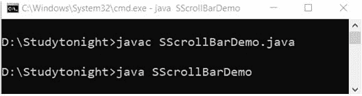 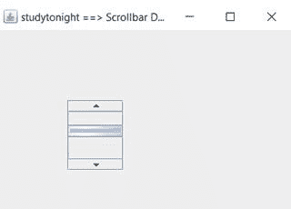
名字，名字，名字
在 Java 中，Swing 工具包包含一个 JMenuBar、JMenu 和 JMenuItem 类。它在 package javax.swing.JMenuBar、javax.swing.JMenu 和 javax.swing.JMenuItem 类下。JMenuBar 类用于在框架上显示菜单栏。JMenu 对象用于下拉菜单栏的组件。对象用于添加带标签的菜单项。
姓名、名称和名称声明
公共类 JMenuBar 扩展了 JComponent 实现的 MenuElement，可访问
公共类 JMenu 扩展 JMenuItem 实现 MenuElement，可访问
公共类 JMenuItem 扩展了 AbstractButton 实现了 Accessible，MenuElement
示例:
让我们举一个例子，在 swing jframe 容器中创建菜单和子菜单。见下面的例子。
import javax.swing.*;
class SMenuDemo1
{
JMenu m_menu, m_submenu;
JMenuItem menu_i1, menu_i2, menu_i3, menu_i4, menu_i5;
SMenuDemo1()
{
JFrame menu_f= new JFrame("Menu and MenuItem Example");
JMenuBar menu_mb=new JMenuBar();
m_menu=new JMenu("Menu");
m_submenu=new JMenu("Sub Menu");
menu_i1=new JMenuItem("Red");
menu_i2=new JMenuItem("Pink");
menu_i3=new JMenuItem("Black");
menu_i4=new JMenuItem("Green");
menu_i5=new JMenuItem("White");
m_menu.add(menu_i1);
m_menu.add(menu_i2);
m_menu.add(menu_i3);
m_submenu.add(menu_i4);
m_submenu.add(menu_i5);
m_menu.add(m_submenu);
menu_mb.add(m_menu);
menu_f.setJMenuBar(menu_mb);
menu_f.setSize(500,500);
menu_f.setLayout(null);
menu_f.setVisible(true);
}
public static void main(String args[])
{
new SMenuDemo1();
}
}
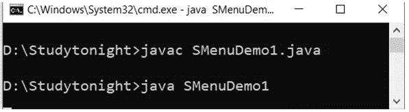 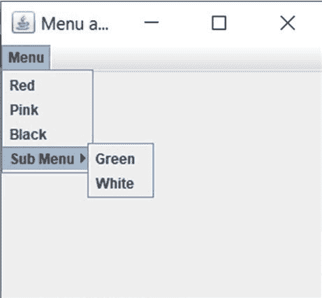
JPopupMenu
在 Java 中，Swing 工具包包含一个 JPopupMenu 类。它在 package javax.swing.JPopupMenu 类下。它用于在指定位置动态创建弹出窗口。
申报
公共类 JPopupMenu 扩展了 JComponent 实现了 Accessible，MenuElement
JPopupMenuContains 包含 2 个构造器。它们如下:
1. JPopupMenu（）
2. JPopupMenu（字符串标签）
示例:
import javax.swing.*;
import java.awt.event.*;
class PopupMenuDemo
{
PopupMenuDemo(){
final JFrame pop_upf= new JFrame("studytonight ==>PopupMenu Demo");
final JPopupMenu popupmenu1 = new JPopupMenu("Edit");
JMenuItem pop_upcut = new JMenuItem("Cut");
JMenuItem pop_upcopy = new JMenuItem("Copy");
JMenuItem pop_uppaste = new JMenuItem("Paste");
popupmenu1.add(pop_upcut);
popupmenu1.add(pop_upcopy);
popupmenu1.add(pop_uppaste);
pop_upf.addMouseListener(new MouseAdapter()
{
public void mouseClicked(MouseEvent a)
{
popupmenu1.show(pop_upf ,a.getX(), a.getY());
}
});
pop_upf.add(popupmenu1);
pop_upf.setSize(300,300);
pop_upf.setLayout(null);
pop_upf.setVisible(true);
}
public static void main(String args[])
{
new PopupMenuDemo();
}
}
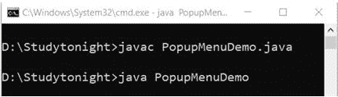 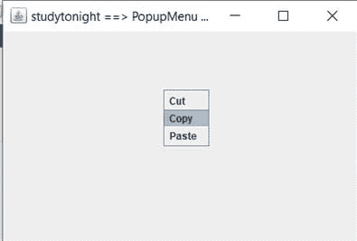
复选菜单项
在 Java 中，Swing 工具包包含一个 JCheckBoxMenuItem 类。它在 package javax . swing . jcheckbox menuitem 类下。它用于在菜单上创建复选框。
JCheckBoxMenuItemContains 包含 2 个构造器。它们如下:
1.JCheckBoxMenuItem()
2.jcheckboxmenuitem(动作 a)
3.jcheckboxmenuitem(图标)
4.jcheckboxmenuitem(字符串文本)
5.jcheckboxmenuitem(字符串文本，布尔型 b)
6.jcheckboxmenuitem(字符串文本图标)
7.jcheckboxmenuitem(字符串文本、图标、布尔 b)
示例:
import java.awt.event.ActionEvent;
import java.awt.event.ActionListener;
import java.awt.event.KeyEvent;
import javax.swing.AbstractButton;
import javax.swing.Icon;
import javax.swing.JCheckBoxMenuItem;
import javax.swing.JFrame;
import javax.swing.JMenu;
import javax.swing.JMenuBar;
import javax.swing.JMenuItem;
public class SCheckBoxDemo
{
public static void main(final String args[])
{
JFrame checkbox_frame = new JFrame("studytonight ==>Jmenu Example");
checkbox_frame.setDefaultCloseOperation(JFrame.EXIT_ON_CLOSE);
JMenuBar checkbox_menuBar = new JMenuBar();
JMenu checkbox_fileMenu = new JMenu("File");
checkbox_fileMenu.setMnemonic(KeyEvent.VK_F);
checkbox_menuBar.add(checkbox_fileMenu);
JMenuItem checkbox_menuItem1 = new JMenuItem("Open", KeyEvent.VK_N);
checkbox_fileMenu.add(checkbox_menuItem1);
JCheckBoxMenuItem checkbox_caseMenuItem = new JCheckBoxMenuItem("Option_1");
checkbox_caseMenuItem.setMnemonic(KeyEvent.VK_C);
checkbox_fileMenu.add(checkbox_caseMenuItem);
ActionListener checkbox_aListener = new ActionListener()
{
public void actionPerformed(ActionEvent event)
{
AbstractButton checkbox_aButton = (AbstractButton) event.getSource();
boolean checkbox_selected = checkbox_aButton.getModel().isSelected();
String checkbox_newLabel;
Icon checkbox_newIcon;
if (checkbox_selected) {
checkbox_newLabel = "Value-1";
} else {
checkbox_newLabel = "Value-2";
}
checkbox_aButton.setText(checkbox_newLabel);
}
};
checkbox_caseMenuItem.addActionListener(checkbox_aListener);
checkbox_frame.setJMenuBar(checkbox_menuBar);
checkbox_frame.setSize(350, 250);
checkbox_frame.setVisible(true);
}
}
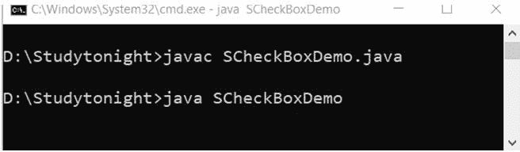 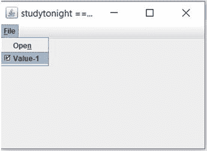
JSeparator
在 Java 中，Swing 工具包包含一个 JSeparator 类。它在 package javax.swing.JSeparator 类下。它用于在两个组件之间创建分隔线。
申报
公共类 JSeparator 扩展 JComponent 实现 SwingConstants，可访问
JSeparatorContains 包含 2 个构造器。它们如下:
1. JSeparator（）
2.JSeparator(面向内部)
示例:
import javax.swing.*;
class SeparatorDemo
{
JMenu sep_menu, sep_submenu;
JMenuItem sep_i1, sep_i2, sep_i3, sep_i4, sep_i5;
SeparatorDemo()
{
JFrame sep_f= new JFrame("Separator Example");
JMenuBar sep_mb=new JMenuBar();
sep_menu = new JMenu("Menu");
sep_i1=new JMenuItem("Black");
sep_i2=new JMenuItem("White");
sep_menu.add(sep_i1);
sep_menu.addSeparator();
sep_menu.add(sep_i2);
sep_mb.add(sep_menu);
sep_f.setJMenuBar(sep_mb);
sep_f.setSize(500,500);
sep_f.setLayout(null);
sep_f.setVisible(true);
}
public static void main(String args[])
{
new SeparatorDemo();
}
}
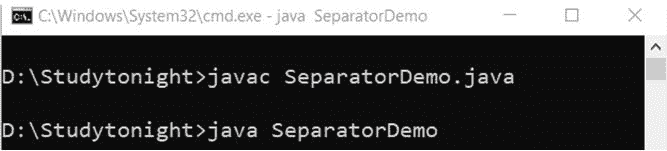 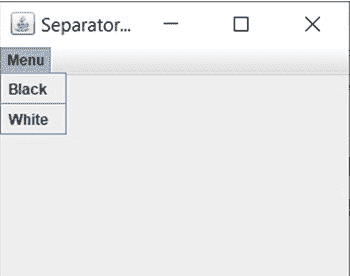
进程条
在 Java 中，Swing 工具包包含一个 JProgressBar 类。它位于 package javax . swing . jprogressbarclass 下，用于创建任务的进度条。
申报
公共类 JProgressBar 扩展了 JComponent 实现 SwingConstants，可访问
JProgressBarContains 包含 4 个构造器。它们如下:
1.JProgressBar()
2 . jprogressbar(内部最小值、内部最大值)
3 . jprogressbar(内部东方)
4.jpprogress(int orient、int min、int max)
示例:
import javax.swing.*;
public class ProgressBarDemo extends JFrame
{
JProgressBar progBar_jb;
int progBar_i=0, progBar_num=0;
ProgressBarDemo()
{
progBar_jb=new JProgressBar(0,2000);
progBar_jb.setBounds(40,40,180,30);
progBar_jb.setValue(0);
progBar_jb.setStringPainted(true);
add(progBar_jb);
setSize(250,150);
setLayout(null);
}
public void iterate()
{
while(progBar_i<=2000)
{
progBar_jb.setValue(progBar_i);
progBar_i = progBar_i + 10;
try
{
Thread.sleep(150);
}
catch(Exception e){}
}
}
public static void main(String[] args) {
ProgressBarDemo obj=new ProgressBarDemo();
obj.setVisible(true);
obj.iterate();
}
}
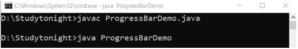 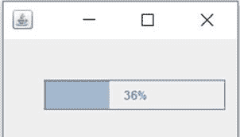
树形结构
在 Java 中，Swing 工具包包含一个 JTree 类。它位于包 javax.swing.JTreeclass 下，用于创建树结构的数据。这是一个非常复杂的组件。
申报
公共类 JTree 扩展了 JComponent，实现了可滚动、可访问
jtree 包含 3 个构造器。它们如下:
1.JTree()
2.对象[]值
3. J 树（树节点根）
示例:
在这个例子中，我们创建了一个显示目录的树形菜单结构。我们使用 Jtree 类来创建树结构。见下面的例子。
import javax.swing.*;
import javax.swing.tree.DefaultMutableTreeNode;
public class TreeDemo
{
JFrame tree_f;
TreeDemo()
{
tree_f=new JFrame();
DefaultMutableTreeNode tree_style=new DefaultMutableTreeNode("Style");
DefaultMutableTreeNode tree_color=new DefaultMutableTreeNode("color");
DefaultMutableTreeNode tree_font=new DefaultMutableTreeNode("font");
tree_style.add(tree_color);
tree_style.add(tree_font);
DefaultMutableTreeNode tree_red=new DefaultMutableTreeNode("red");
DefaultMutableTreeNode tree_blue=new DefaultMutableTreeNode("blue");
DefaultMutableTreeNode tree_black=new DefaultMutableTreeNode("black");
DefaultMutableTreeNode tree_green=new DefaultMutableTreeNode("green");
tree_color.add(tree_red);
tree_color.add(tree_blue);
tree_color.add(tree_black);
tree_color.add(tree_green);
JTree tree_jt=new JTree(tree_style);
tree_f.add(tree_jt);
tree_f.setSize(200,200);
tree_f.setVisible(true);
}
public static void main(String[] args) {
new TreeDemo();
}
}
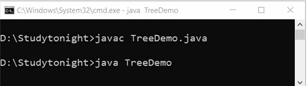 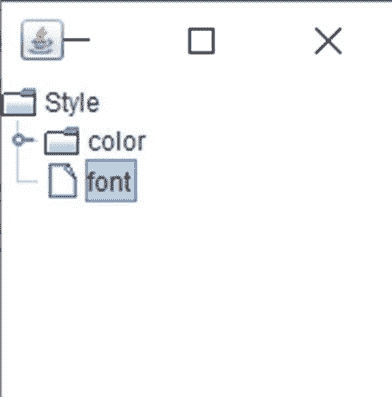